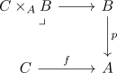

pullback of a weak equivalence along a kan fibration as weak equivalence
Proposition
Let

be a pullback in category sSet where
- $p$ is a kan fibration
- $f$ is a weak equivalence between fibrant objects (???)
Then
\begin{align*}
C \times_A B \rightarrow B
\end{align*}
is also a weak equivalence